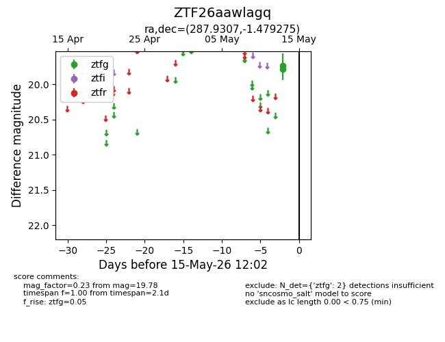
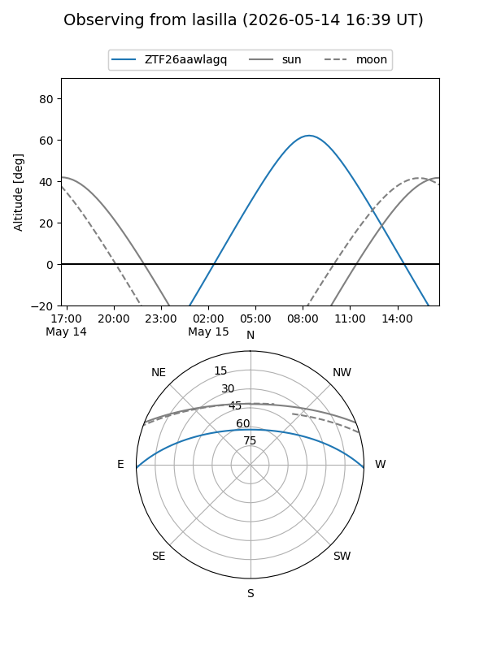
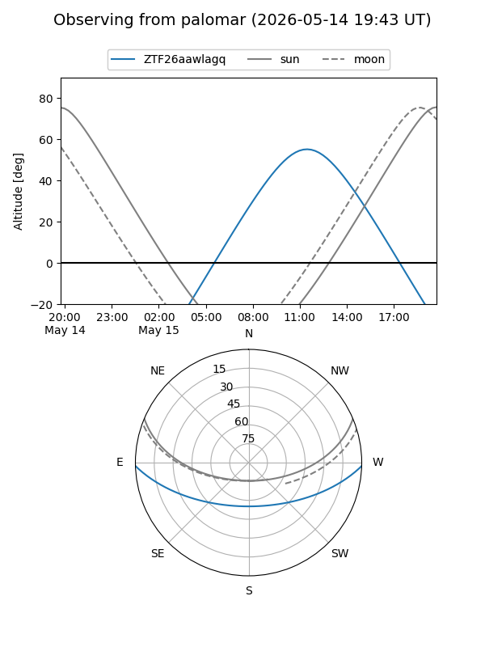

ZTF26aawlagq
Target ZTF26aawlagq at 2026-05-15 12:04
Aliases and brokers:
FINK: link
Lasair: link
ALeRCE: link
alt names
ZTF26aawlagq (ztf,fink_ztf)
Coordinates:
equatorial (ra, dec) = 287.9307,-1.47927
equatorial (HMS+DMS) = 19:11:43.36,-01:28:45.39
galactic (l, b) = (33.9283,-5.18744)
Flags:
Photometry:
last ztfg=19.78
2 ztfg detections
Lightcurve

Visibility


Additional plots